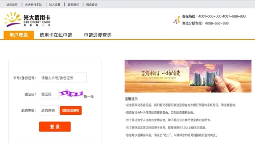

一、网银导入只支持网上银行的账号登录
本平台的网银导入服务只支持光大银行网上银行登录，即您注册该网银的信用卡卡号／身份证号码，不支持手机银行登录和企业网银登录。
光大银行个人网上银行登录入口：https://xyk.cebbank.com/mall/login?target=/mycard/home/home.htm
二、如何确认自己登录账号、登录密码的有效性
请访问光大银行官网（https://https://xyk.cebbank.com/mall/login?target=/mycard/home/home.htm）进行登录验证。如果能登录成功，请将相应登录账号和登录密码在本平台进行登录即可完成网银导入。
三、常见问题
Q：未收到【短信验证码】，怎么办？
1、请确认当前手机号是开通网上银行时填写的手机号，如若不是，请携带相关证件、银行卡等物品到邻近网点办理更换手机号业务。
2、短信发送时可能存在延迟现象，请您耐心等待。
3、如果确认当前手机号是开通网上银行时填写的手机号，仍无发正常发送短信验证码，可能是发送短信过于频繁，您可以稍后再试。